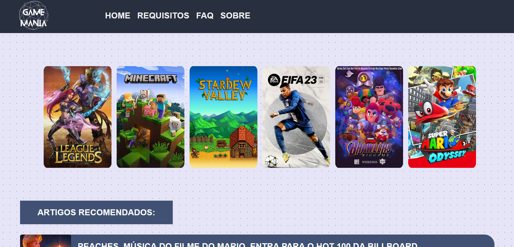

GAMEMANIA
Gamemania é o site ideal para os amantes de jogos. Aqui você encontra tudo o que precisa saber sobre os requisitos mínimos e recomendados para rodar os seus jogos favoritos no seu PC ou console. Além disso, você também pode conferir as configurações de hardware e software dos jogos, bem como dicas e truques para melhorar o seu desempenho e aproveitar ao máximo a sua experiência gamer. Gamemania é o seu guia definitivo para o mundo dos jogos. Acesse já e descubra!
SISTEMA DE LOGIN
Este site é um exemplo de login e registro usando Typescript, uma linguagem de programação que adiciona tipos estáticos ao Javascript. Ele usa o módulo http do Node.js para enviar e receber requisições HTTP, e o módulo fs para ler e escrever arquivos JSON. Ele armazena os dados dos usuários em um array.
SÓCIO REI
Este site é um exemplo de como usar a propriedade display flex do CSS para criar layouts flexíveis e responsivos. Ele mostra uma página com informações sobre o Sócio Rei do Santos, um programa de relacionamento que o clube mantém com os seus torcedores. Ele usa imagens, textos e botões para apresentar os benefícios, planos e experiências que o Sócio Rei oferece. Ele também usa a propriedade flex para alinhar e distribuir os elementos dentro de um contêiner flexível, que se adapta ao tamanho da tela.
ALUNOS
Este site usa arrays em Javascript para mostrar e editar o nome dos alunos de uma turma.
PC SERVER
Este site é um exemplo de como exibir um computador que hospeda sites na internet. Ele mostra um computador com um monitor, um teclado e um mouse, e uma lista de sites que ele hospeda, como Google, Facebook, YouTube e outros. Ele usa HTML, CSS e Javascript para criar o layout e a interatividade do site. Ele também usa uma API para obter os dados dos sites hospedados, como o nome, o endereço, o ícone e o status. Ele permite clicar nos sites para abrir uma nova aba com o site selecionado.
LINKS SANTISTAS

Este site é um exemplo de como exibir um computador que hospeda sites na internet. Ele mostra um computador com um monitor, um teclado e um mouse, e uma lista de sites que ele hospeda, como Google, Facebook, YouTube e outros. Ele usa HTML, CSS e Javascript para criar o layout e a interatividade do site. Ele também usa uma API para obter os dados dos sites hospedados, como o nome, o endereço, o ícone e o status. Ele permite clicar nos sites para abrir uma nova aba com o site selecionado.